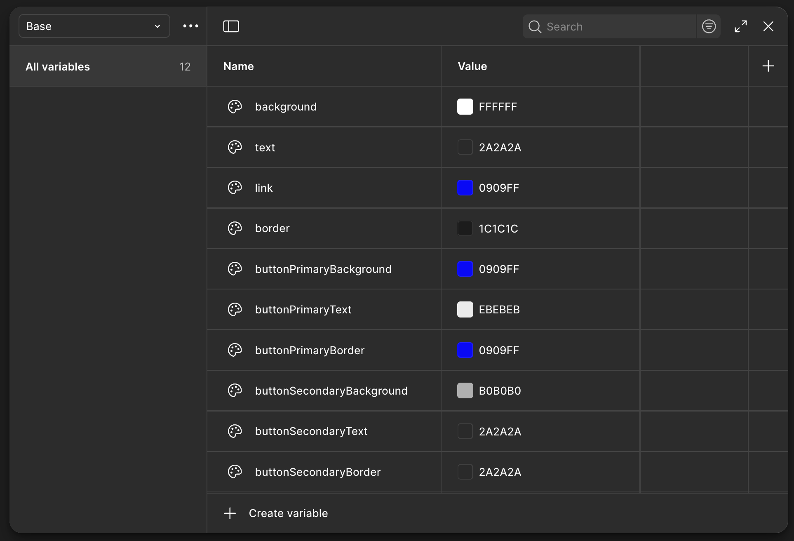
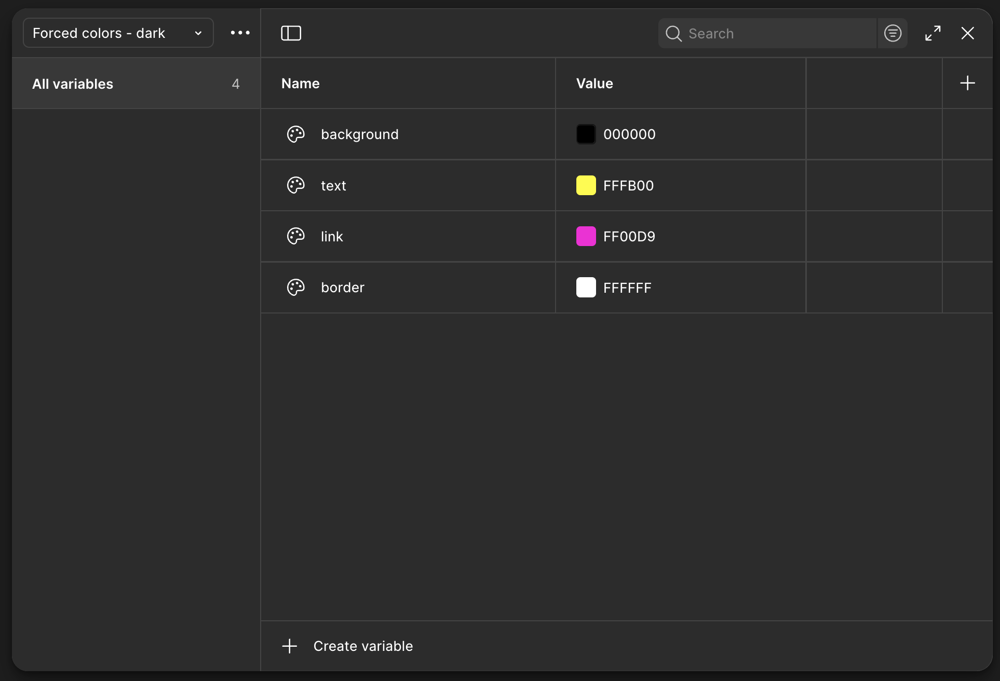

Example: forced colors mode
Technique
Add Figma variables for each CSS system color. You can use variable collections or variable modes to organize them, but modes give you the quickest way to approximate forced-colors mode.
 (Note: Having more than 1 variable mode is a paid feature in Figma.)